Tickets¶
Agents can communicate with customer users via email, phone or SMS, and agents can communicate with other agents via note. Additionally, it is possible to start processes, which can affect both agents and customer users.
The communication is managed with using tickets. This means, OTRS will convert any type of communications into tickets, and it will add the messages as articles to the ticket.
Create Ticket¶
Use this screen to add new ticket to the system. The ticket create screen is available from the main menu and from the action menu, as well as from the customer and customer user cards.
When agents start the communication, they can create email tickets, phone tickets, process ticket or SMS tickets. All communications result a ticket, and the first message is added to the ticket as an article.
- Email Ticket
- Email ticket is used to send an email to the customer user or to other recipients, when the ticket is created.
- Phone Ticket
- Phone ticket is used to record the information during a phone call with the customer user. When the ticket is created, no email will be sent to the customer user. The ticket is treated as it was originally created by the customer user.
- Process Ticket
- Creating a process ticket will start a defined process. The agents and the customer users have to follow the steps, that is provided by the process. Any message created during a process ticket will create new articles to this ticket.
- SMS Ticket
- SMS ticket is used create a ticket and send the first article via SMS to the customer user. SMS ticket has a limited body to fit the text to the restriction of the SMS.
The following section explains, how can an agent create a new request in the agent interface for the customer user. Creating email tickets, phone tickets and SMS ticket are almost the same, so the following sections will describe the ticket creation in a general manner.
Properties Widget¶
The Properties widget is used to create the request for the customer user. This widget consists of four sections: Customer, Assignment, Service Level Management and Communication.
- Customer
In this section can be selected the customer user, who the new ticket is created for. The customer user can be selected by typing the name into the field, or by using the customer address book next to the field. Using the wildcard character * is possible to search for the customer user.
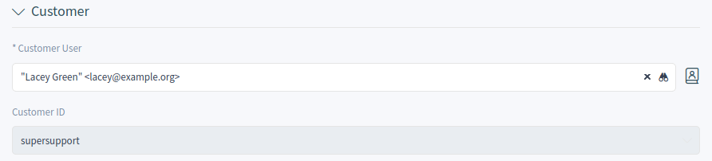Select Customer User
- Customer User *
- The person, to whom the ticket is created for.
- Customer ID
- This field will be auto-populated by selecting a customer user.
- Assignment
In this section can be selected the queue as well as the owner and the responsible of the ticket. The queue selection is mandatory.

Queue And Owner Selection
- Queue *
- The queue, where the new ticket will be placed to.
- Owner
- The owner is an agent, who actually works with the new ticket.
- Responsible
The responsible agent will be responsible for the ticket. This agent has the same permissions as the owner.
Note
The responsible feature is not enabled by default. It needs to be activated by an administrator first in order to use it.
- Service Level Management
In this section can be selected the priority and the next ticket state.
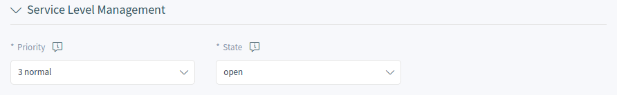Priority And State Selection
- Priority *
- New tickets have 3 normal priority by default. Select an other priority if you want to change it.
- State *
- New tickets are in open state by default. Select an other state if you want to change it.
- Communication
In this section can be written the message like in an email client. This section is different for phone tickets and email tickets.
In the widget configuration of this widget it is possible to set whether the next screen after creation of a ticket is the create screen again or the detail view of the created ticket.
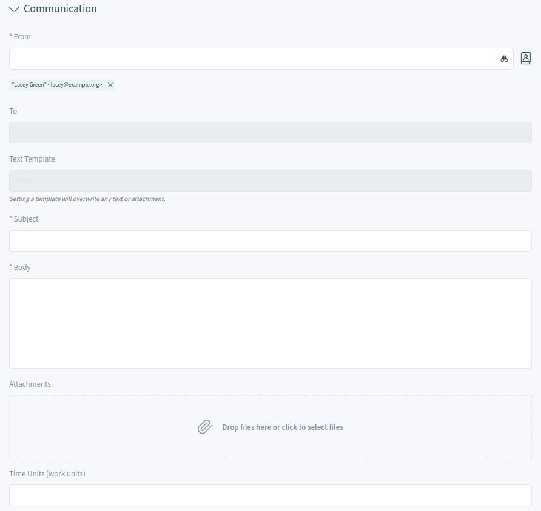Write The Message
- From *
- This field is available only for phone tickets and it is mandatory, because a phone ticket is treated as it is created by the customer user.
- To *
For an email ticket, this will be the person, to whom the ticket is created for. This will be the To field of the email.
Note
Usage of wildcards (*) is also possible. Enter two asterisks (**) to list all customer users.
For phone tickets, the To field is read-only and will be auto-populated with the queue selected in the previous section.
- Cc
- Select other customer users as carbon copy of the email, if needed. This field is displayed only for email tickets.
- Bcc
- Select other customer users as blind carbon copy of the email, if needed. This field is displayed only for email tickets.
- Text Template
- It is possible to select a text template for the new ticket. The content of the template will overwrite the existing texts.
- Subject *
- The subject of the ticket like the subject of an email.
- Body *
- The body text of the first article of the ticket.
- Signature
- This field is only applied for the email tickets and appends a pre-configured signature text to the body text.
- Attachments
- It is possible to add attachments to the ticket. Click on the field to add an attachment, or just drop some files here.
- Time Units
- Enter any amount of time units for time accounting.
Customer Information Widget¶
This widget displays detailed information about the selected customer user and about its customer.
Customer Information Widget
Customer User History Widget¶
This widget shows the tickets for the customer user selected above.
Customer User History Widget
Customer History Widget¶
This widget shows the tickets for the customer selected above.
Customer History Widget
Ticket List¶
The ticket list shows tickets based on the configuration. The visible columns and the filter configuration can be changed using the Customize Organizer menu item in the Personalization menu.
Ticket List
If there are articles in a ticket, that the agent did not read yet, the ticket is displayed with bold text in the ticket list and marked as unread. When an agent select a ticket and read all its articles, it will be marked as read and will be displayed with normal text in the ticket list.
Clicking on a ticket in the list opens the detail view of the ticket.
See also
The general usage of this list is explained in the Business Object List section of the Navigation And Usage chapter.
Ticket List Actions¶
The ticket list supports some actions that can be performed on many tickets at the same time. To enable the bulk actions, the agent has to select at least one ticket in the list and to click on the pen icon.
The eye icons allow to watch or unwatch the tickets. With this function an agent can subscribe or unsubscribe for the ticket changes. An agent who is watching a ticket will be notified like the owner or the responsible of the ticket.
Note
The ticket watch feature is not enabled by default. It needs to be activated by an administrator first in order to use it.
If the selected tickets are not locked to the agent, they will be automatically locked, while performing the bulk action. This needs to be confirmed first by clicking on the Lock and Continue button.
Lock and Continue
Note
If the agent has no permissions to lock the selected tickets, a notification message will inform the agent about the tickets that can not be locked. It is possible to continue with the bulk action, but the listed tickets will not be affected.
The following actions are available:
- Change Properties
This action allows to change the properties for the selected tickets.
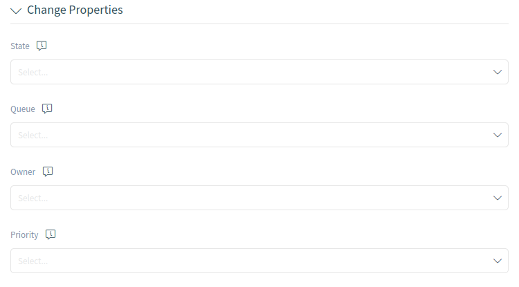Change Properties
The following properties can be changed:
- State
- Queue
- Owner
- Priority
- Link Tickets
This action allows to link the selected tickets together or with a parent ticket. The linked tickets will be displayed in the Linked Tickets widget of the ticket detail view.
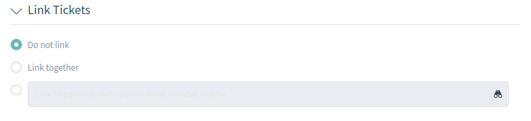Link Tickets
- Do not link
- Select this option, if the selected tickets should not be linked. This is selected by default.
- Link together
- Select this option to link the selected tickets together.
- Search field
- The search field allows to search for an other ticket. Using wildcard * is supported. The selected tickets from the ticket list will be linked to the selected ticket by the search field.
- Merge Tickets
This action allows to merge the selected tickets to the oldest one or to an other ticket.
Warning
The merge action can not be undone.
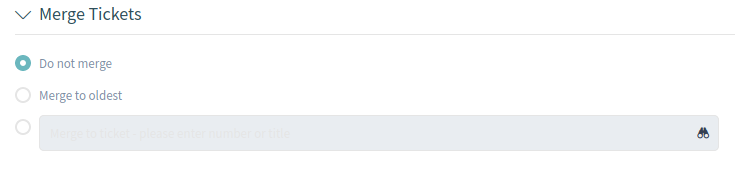Merge Tickets
- Do not merge
- Select this option, if the selected tickets should not be merged. This is selected by default.
- Merge to oldest
- Select this option to merge the selected tickets to the oldest one.
- Search field
- The search field allows to search for an other ticket. Using wildcard * is supported. The selected tickets from the ticket list will be merged to the selected ticket by the search field.
- Write Email
This action allows to write an email message to customer users found in the selected tickets. The body of the email will be added to the selected tickets as an article.
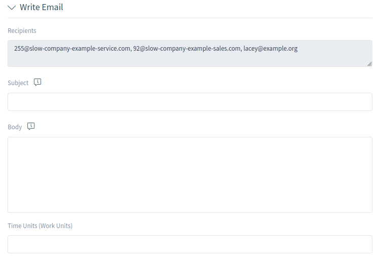Write Email
- Recipients
- This field is read-only and contains all recipients from the selected tickets.
- Subject
- This text will be the subject for the emails to be sent and the subject of the article to be added to the selected tickets.
- Body
- This text will be the body for the emails to be sent and the body of the article to be added to the selected tickets.
- Time Units
- Enter any amount of time units for time accounting.
- Write Note
This action allows to write a note for the selected tickets. The body of the note will be added to the selected tickets as an article.
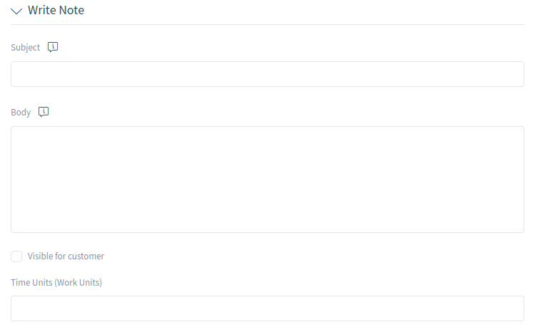Write Note
- Subject
- This text will be the subject for the emails to be sent and the subject of the article to be added to the selected tickets.
- Body
- This text will be the body for the emails to be sent and the body of the article to be added to the selected tickets.
- Visible for customer
- If this checkbox is checked, the note will be visible for customer users in the external interface.
- Time Units
- Enter any amount of time units for time accounting.
Click on the Execute Bulk Action button to perform the selected actions. After executing the bulk action, the selected tickets are automatically unlocked. To prevent this, unselect the checkbox Unlock after bulk execute. In this case the affected tickets remain locked.
Ticket Detail View¶
Use this screen to see the details of a ticket. The ticket detail view is available, if you select a ticket from a ticket list.
Ticket Detail View Widgets¶
Like other business object detail views, the ticket detail view is also highly customizable. Some of the following widgets are displayed with the default installation, but others have to be added in the screen configuration.
- Drafts Widget
This widget shows the new articles, that are saved for later work. This widget is displayed only, when at least one draft has been saved.
Clicking on an item in the list opens the draft to continue editing it.
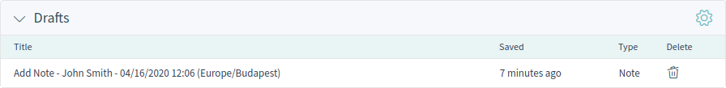Drafts Widget
- Communication Compact Widget
This widget shows all articles of the ticket in a table view. There is an Expand All or Collapse All button in the header to expand or collapse the content of the widget.
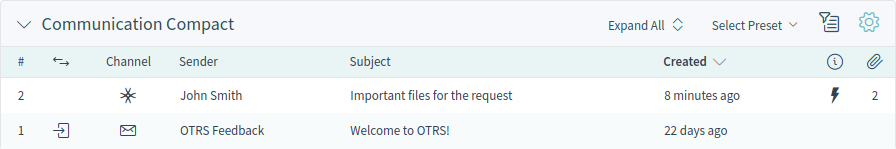Communication Compact Widget
The column with the arrows informs about the direction of the article.
Articles in the communication of a ticket can come from different channels. The column Channel informs about the channel of the according article.
The column with the information icon shows additional article information, for example if the article is marked as important.
The last column indicates, whether the article has attachments or not.
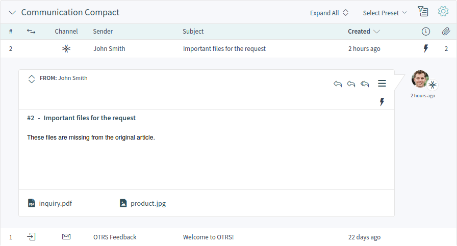Expanded Communication Compact Widget
Clicking on an article will display the detail view of Articles. Unread articles are displayed with bold text. Clicking on the Expand all button at the top of the widget expands all articles and marks all articles as read.
- Communication Stream Widget
This widget shows the articles of a ticket in a different form than in the widget Communication Compact. The articles are displayed as symbolic speech bubbles next to the authors’ avatar images with the title and first few lines of the article.
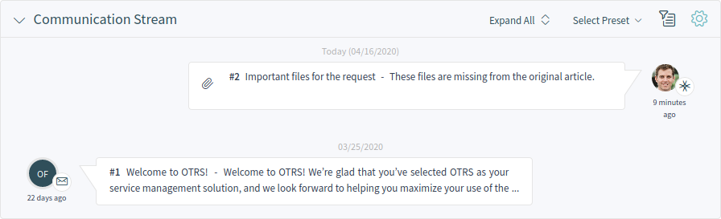Communication Stream Widget
The article direction is represented by the avatars of each side. Avatars on the left side represent the incoming articles and the avatars on the right side represent the outgoing articles. The icons near the avatars represent the channel of the article.
Clicking on an article will display the detail view of Articles. Unread articles are displayed with bold text. Clicking on the Expand all button at the top of the widget expands all articles and marks all articles as read.
- Properties Widget
This widget shows the properties of the ticket. The properties are presented as small cards within the widget.
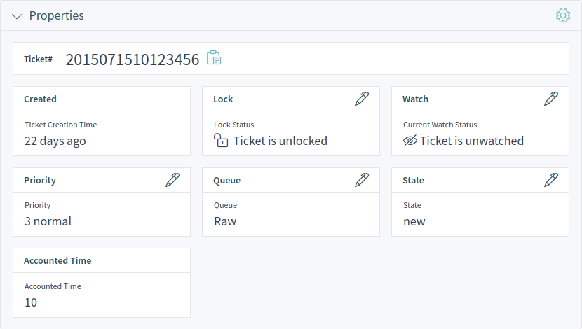Properties Widget
Most of the cards have a pen icon in the right corner. Clicking on this icon allows to directly edit the property.
- People Widget
This widget can be used to display customer user cards for the people, who created the ticket or who are set as owner or responsible for it.
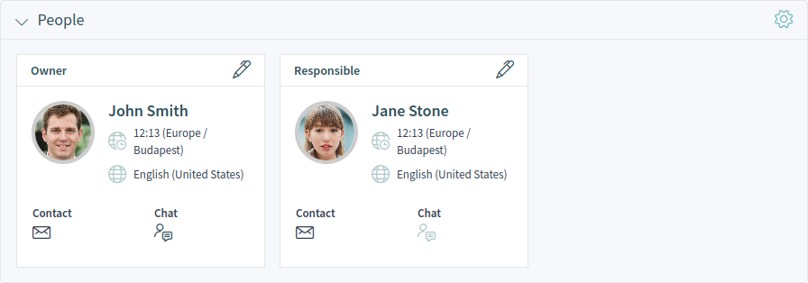People Widget
- Customer Information Widget
This widget shows information about the customer and the customer user of the ticket.
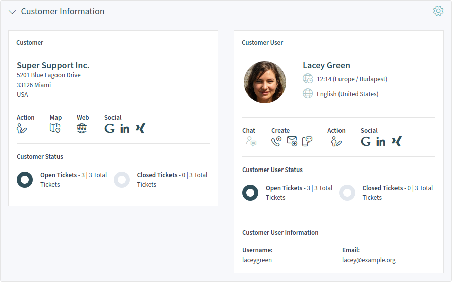Customer Information Widget
The cards show the number of open and closed tickets. From the Action section it is possible to edit the customer or the customer user. The Social section contains search links for some social media or search engines. Using the icons in the Create section, it is possible to create any type of tickets. If the customer user is online, the agent can start a chat with the customer user.
For unknown customers, only a Show All Tickets button is displayed in this widget.
- Linked Tickets Widget
This widget shows the linked tickets, but the widget is displayed only, when at least one ticket is linked to this business object. New links can be added with the Link action. Existing links can also be managed there.

Linked Tickets Widget
- Linked Knowledge Base Articles Widget
This widget shows the linked knowledge base articles, but the widget is displayed only, when at least one knowledge base article is linked to this business object. New links can be added with the Link action. Existing links can also be managed there.
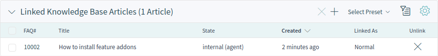Linked Knowledge Base Articles Widget
- Linked Appointments Widget
This widget shows the linked appointments, but the widget is displayed only, when at least one appointment is linked to this business object. New links can be added with the Link action. Existing links can also be managed there.
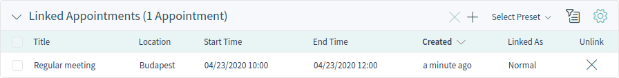Linked Appointments Widget
- Attachments Widget
This widget can be used to display attachments of the articles. The attachments can be downloaded and for the images, a preview function is supported.
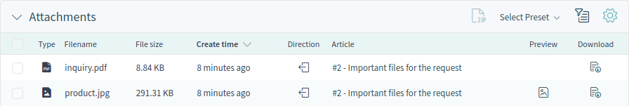Attachments Widget
Ticket Detail View Actions¶
The following actions are available in the ticket detail view.
Ticket Detail View Actions
- Communication
This column groups the following actions together:
- Note
- This action allows to create a note for ticket and to add the note as article to the ticket. Notes are only visible for agents by default.
- Phone Call Outbound
- This action allows to add a note based on an outgoing phone call to the ticket.
- Phone Call Inbound
- This action allows to add a note based on an incoming phone call to the ticket.
- E-Mail Outbound
- This action allows to send an email and to add the email as article to the ticket. This screen is very similar to an email client screen.
- SMS Outbound
- This action allows to send an SMS and to add the SMS as article to the ticket.
Note
Additional contract is needed to use this action.
- Miscellaneous
This column groups the following actions together:
- Lock or Unlock
- This action allows to lock or unlock the ticket. If an agent locks the ticket, they will be the owner of the ticket.
- Free Fields
- This action allows to change the free fields of ticket, for example the title of the ticket.
- Merge
This action allows to merge the ticket to an other ticket.
Warning
The merge action can not be undone.
- This action allows to print the ticket to a PDF file and to download it.
- Watch or Unwatch
- This action allows to subscribe or unsubscribe for the ticket changes. An agent who is watching a ticket will be notified like the owner or the responsible of the ticket.
- New Appointment
- This action allows to create an appointment for the ticket. The new appointment will be linked to the ticket and will be visible in the Calendar Overview.
- Organize
This column groups the following actions together:
- Close
- This action allows to close the ticket.
- Link
- This action allows to link other business objects to the ticket.
- Move
- This action allows to change the queue of the ticket. Queues are like folders for tickets. A ticket can belong to only one queue at a time.
- Pending
- This action allows to set the pending time of the ticket.
- Priority
- This action allows to change the priority of the ticket.
- People
This column groups the following actions together:
- Owner
- This action allows to change the owner of the ticket.
- Responsible
This action allows to set or change the responsible of the ticket.
Note
The responsible feature is not enabled by default. It needs to be activated by an administrator first in order to use it.
- Customer
- This action allows to change the customer and the customer user of the ticket.
- Views
This column groups the following actions together:
- History
- This action allows to view the history of the ticket. The history contains all operations with timestamp and username that happened with the ticket in the past.
Sidebar¶
The sidebar gives a quick overview about what agents are involved in the ticket, who is the owner or the responsible of the ticket and who are watching the ticket.
Sidebar
Involved agents are indicated with a pen icon when hovering the mouse over the sidebar. This means that the agent has performed some actions on the ticket, for example changed the properties or added articles.
The agents, who are watching the ticket are indicated with an eye icon when hovering the mouse over the sidebar.
The dark green border around the avatar image means that the agent is the owner of the ticket, while the responsible agent has a light green border around the avatar image.